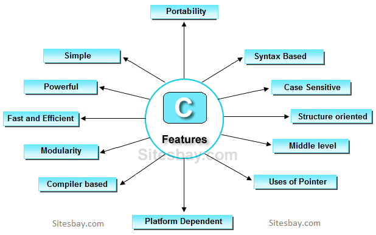

C Language - Overview
C is a general-purpose, high-level language that was originally developed by Dennis M. Ritchie to develop the
UNIX operating system at Bell Labs. C was originally first implemented on the DEC PDP-11 computer in 1972.
In 1978, Brian Kernighan and Dennis Ritchie produced the first publicly available description of C, now known
as the K&R standard.
 Dennis M. Ritchie
Brian Kernighan
Dennis M. Ritchie
Brian Kernighan
Why to Learn C Programming?
C programming language is a MUST for students and working professionals to become a great Software Engineer
specially when they are working in Software Development Domain. I will list down some of the key advantages of
learning C Programming:
- Easy to learn
- Structured language.
- It produces efficient programs.
- It can handle low-level activities.
- It can be compiled on a variety of computer platforms.
Facts about C
C was invented to write an operating system called UNIX.
C is a successor of B language which was introduced around the early 1970s.
The language was formalized in 1988 by the American National Standard Institute (ANSI).
The UNIX OS was totally written in C.

Today C is the most widely used and popular System Programming Language.
Most of the state-of-the-art software have been implemented using C.